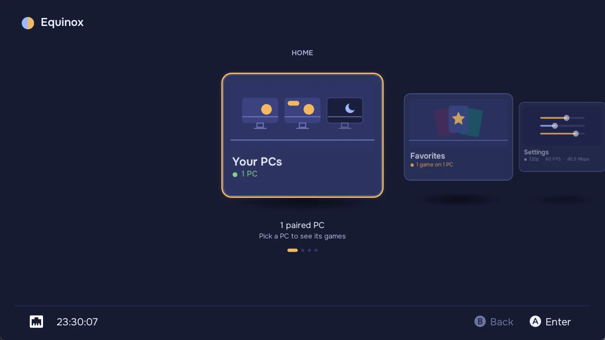
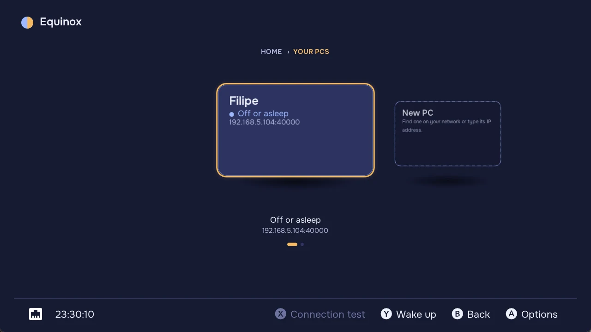
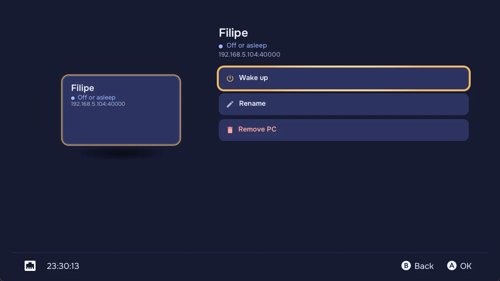
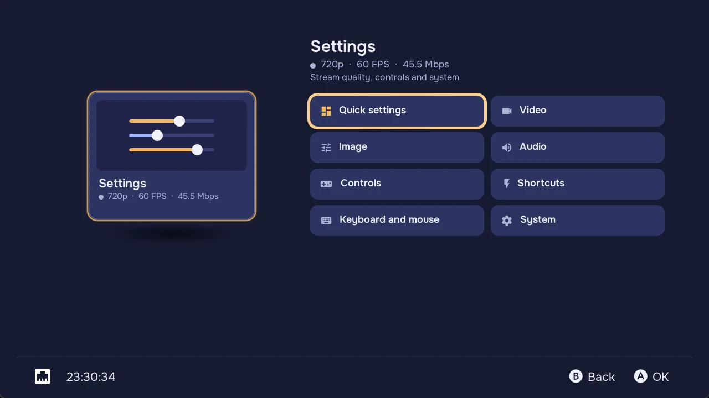

Everything on one shelf of cards.
Your PCs, favorites, settings and the about page float on one shelf, like the games in a library. Press A to step into a card and its options open beside it. B steps back out.
- Each PC shows how it is. Online, asleep or out of reach, and the game it is running, so you can resume straight away.
- Favorites from every PC in one place. One shelf of covers, filtered by PC with L and R. A cover tells you when its PC is off.
- Settings a step away. Quick settings and every group open straight from the home screen.




Know what your network can stream.
Instead of guessing a bitrate and watching the picture break up, run the connection test once and let Equinox set the stream for you.
Recommended settings in one click
After the test, Equinox suggests a bitrate, resolution and frame pacing, and applies them to the profile you tested, docked or handheld.
Uses Solstice's speed test
When the host is Solstice, Equinox uses its speed test. On Sunshine it falls back cleanly.
The connection test
Equinox measures latency and download speed to your PC, then streams at increasing bitrates until it finds the highest one your network and console sustain. The stream plays in a preview while the test runs.
- Measures
- Latency, download speed, the highest bitrate that holds
- Suggests
- Bitrate, resolution and frame pacing
- Applies to
- The docked or handheld profile you tested
Also in Equinox.
In-app updates
Equinox checks for new releases and installs them itself when it runs as an NRO from the SD card.
Games on the HOME Menu
Select a favorite and press X to install a forwarder that starts the stream straight away.
Your pairings carry over
Settings live where Moonlight-Switch keeps them, so your PCs and favorites are already there.
Equinox next to Moonlight-Switch.
Equinox is a fork of Moonlight-Switch and keeps its streaming core. It adds the parts that help you get a good stream and get to your games faster.
| Feature | Moonlight-Switch | Equinox |
|---|---|---|
| Connection test | No | Yes, with a live preview |
| Recommended stream settings | No, set by hand | Yes, per docked or handheld profile |
| Home screen | Tabs with a list of PCs | Floating cards with each PC's status and running game |
| Favorites | A favorites tab | One cover shelf from every PC, filtered by PC |
| Solstice speed test | No | Yes, with a Sunshine fallback |
| In-app updates | No | Yes, as an NRO |
| HOME Menu forwarders | Yes | Yes |
| Languages | Many, translated by the community | English and Brazilian Portuguese complete, the others partly in English |
Made to pair with Solstice.
Solstice is the Windows host I build alongside Equinox. With it, your games see a Switch 2 Pro Controller with gyro and HD rumble, and the connection test runs on its speed test. Equinox still works with Sunshine, and Solstice with any Moonlight client.
Install.
Four steps on a Switch that runs homebrew.
High bitrates, especially at 1080p, may need the console overclocked with sys-clk. Overclocking is at your own risk.
- Download EquinoxGet
Equinox.nrofrom the latest release. - Copy it to the SD cardPut it in
sdmc:/switch/Equinox/. - Open the Homebrew Menu from a gameHold R while launching any game, so Equinox gets the console's full memory.
- Launch Equinox and pair your PCPick it from the Your PCs shelf, or add it with New PC, and type the PIN on the host.